Een arcade-kast voor jonge uitvinders
Je eigen game-avatar ontwerpen en zelf een game-controller bouwen waarmee jij op je eigen manier een game bestuurt. Studio Wotto inspireert de uitvinders van morgen en maakt een interactieve arcade-kast waarmee jongeren worden uitgedaagd om innovatief en creatief te denken.
Retro technologie als inspiratie
In samenwerking met het Summa College Techniek heeft Studio Wotto een interactieve arcade-kast ontwikkeld om jongeren enthousiast te maken voor techniek. De machine was te zien op de High Tech Ontdekkingsroute in de Brainport regio. Met deze interactieve installatie kunnen jongeren hun eigen avatar ontwerpen en vervolgens uploaden naar de arcade-kast. Dit doen ze door hun ontwerp op papier via een ouderwetse floppy disk drive in de machine te stoppen, een soort postbus die hun avatar meteen in de game laat verschijnen.
Gamen doe je samen
Maar dat is nog niet alles. De game speel je niet alleen, maar tegen elkaar. Om echt een voordeel te hebben tegenover je tegenstanders, kun je ook aanpassingen maken aan de gamecontroller. Door zelf drukknoppen met krokodillenbekjes aan het besturingssysteem te verbinden of je eigen elektronische circuit in elkaar te knutselen, kun je een besturing maken die bij jou past. Je zou zelfs een besturing kunnen maken die ervoor zorgt dat jij altijd wint. Hierdoor worden jongeren gestimuleerd om innovatief te denken.
Inspiratie
De interactieve installatie ontstond vanuit de behoefte om jongeren te enthousiasmeren voor techniek. Dat is belangrijk omdat technische vaardigheden essentieel zijn voor de banen van de toekomst. Gamen spreekt veel jongeren aan, dus waarom niet gamen combineren met leren over ontwerpen en elektronica? Dat heet gamification. Het project biedt een perfecte balans tussen leren en creativiteit. Wanneer je jongeren de kans geeft om iets van zichzelf toe te voegen, ontstaat er meer betrokkenheid en onthouden ze vaak beter wat ze hebben geleerd.
De toekomst van het project
Het eerste prototype werd tijdens de High Tech Ontdekkingsroute enthousiast ontvangen. Het plan is om meer party games te maken voor dit project en de arcade-kast op meer plekken te gaan testen. Ook krijgt het uiterlijk van de arcade-kast nog een overprikkelende neonuitstraling 😄, zodat we meer jongeren kunnen enthousiasmeren voor techniek.
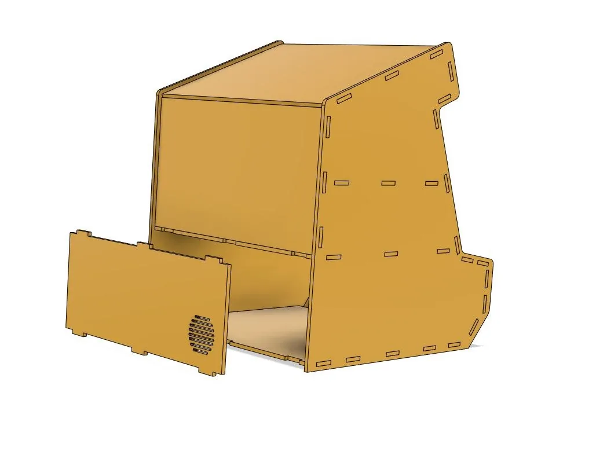
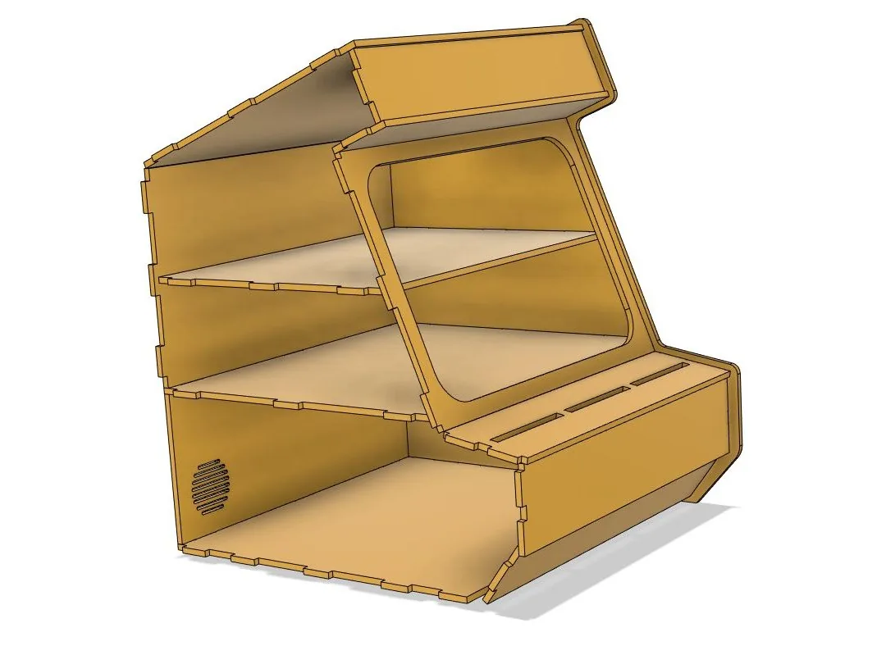
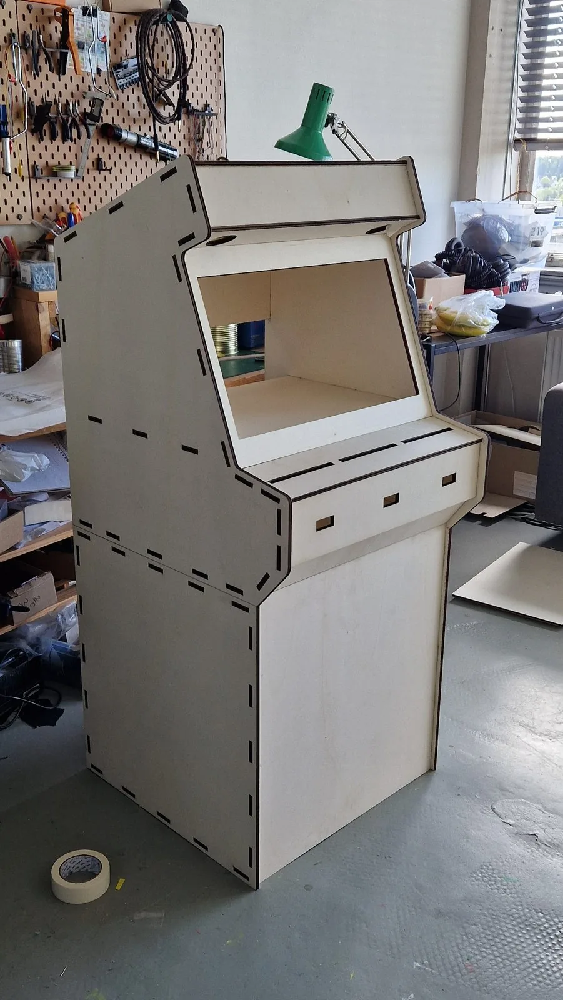
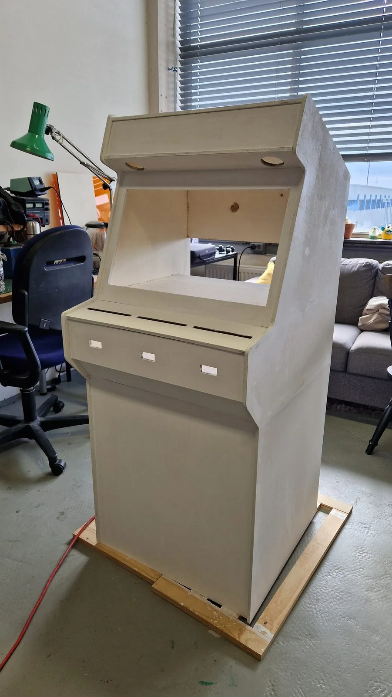
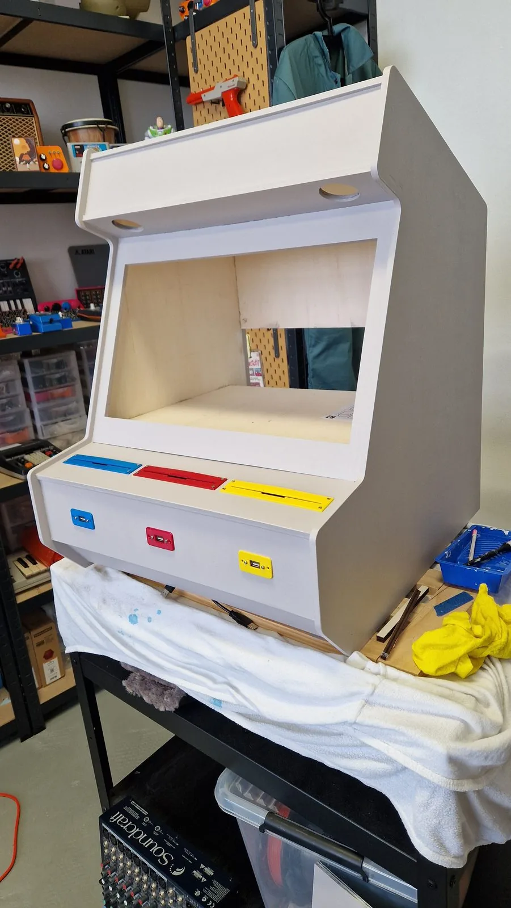
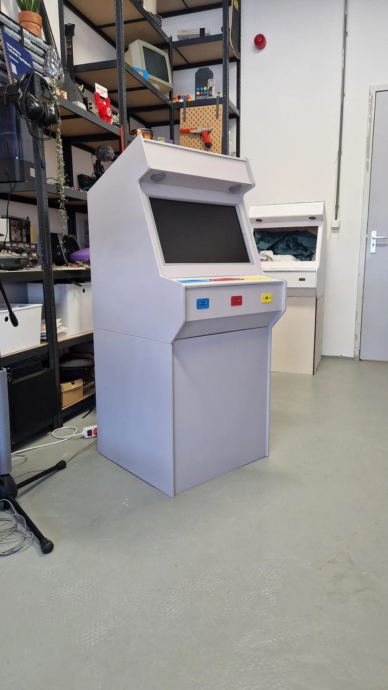
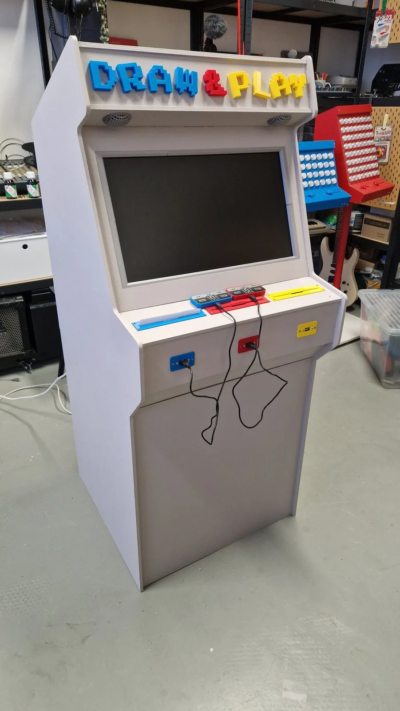
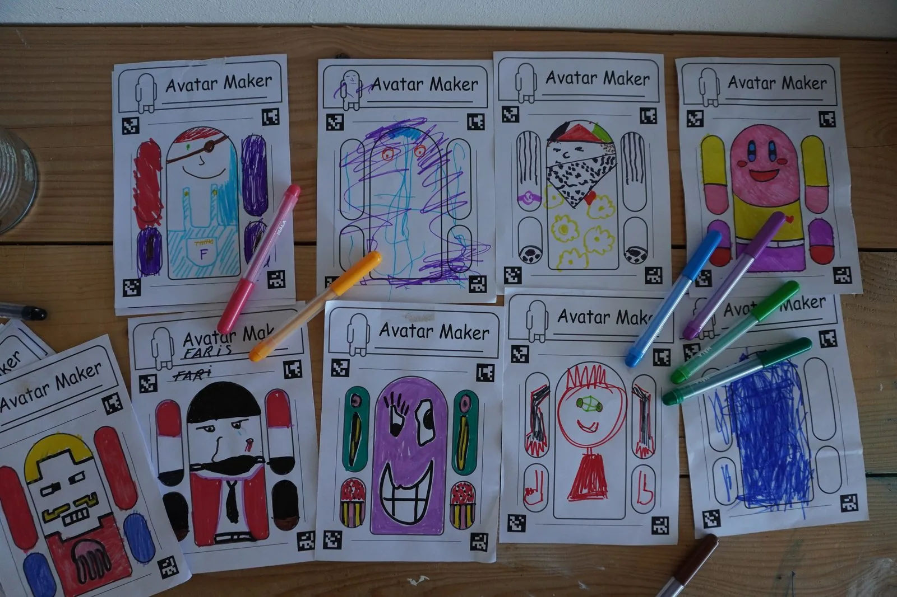
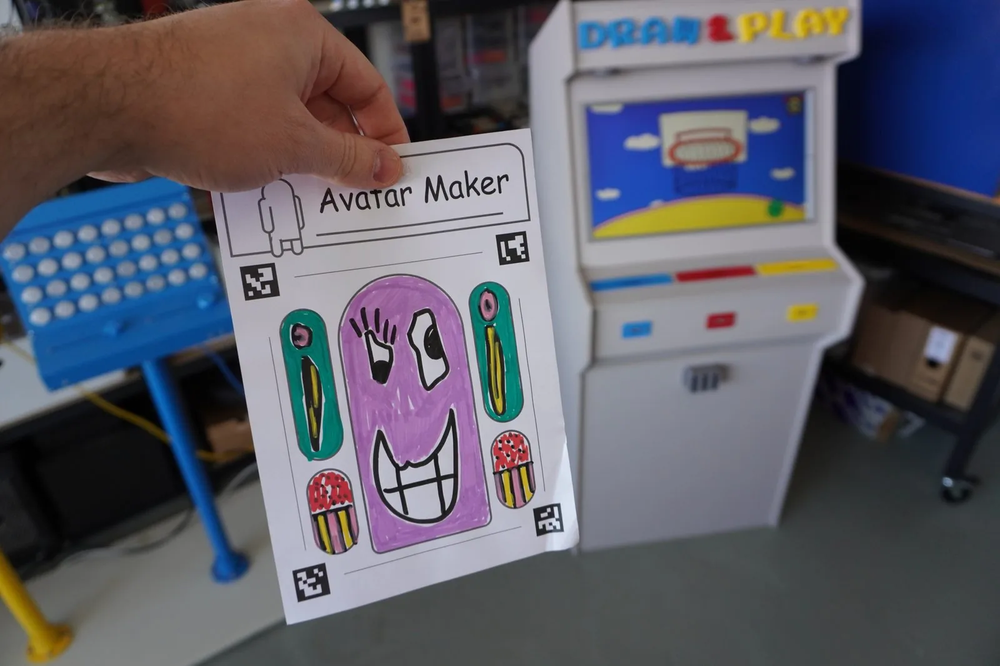
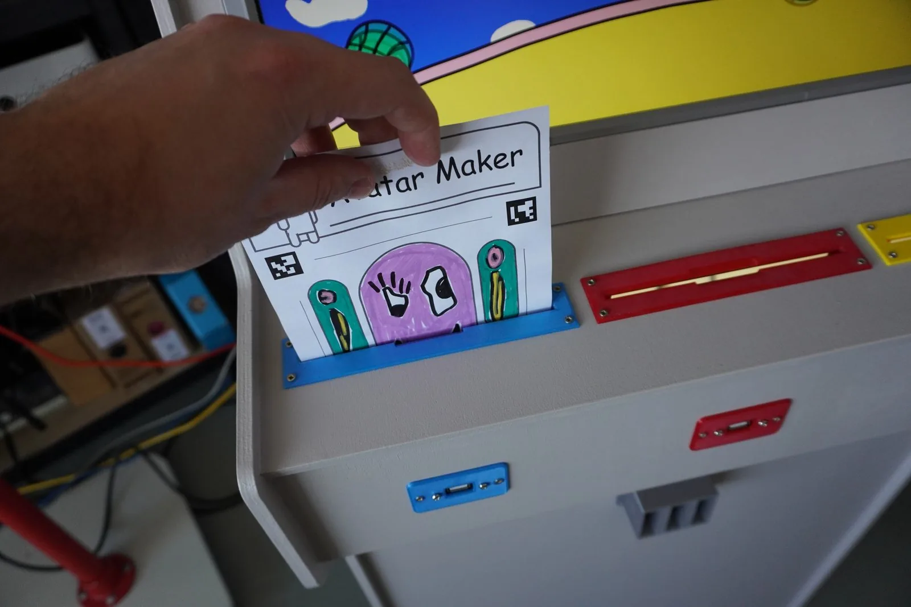
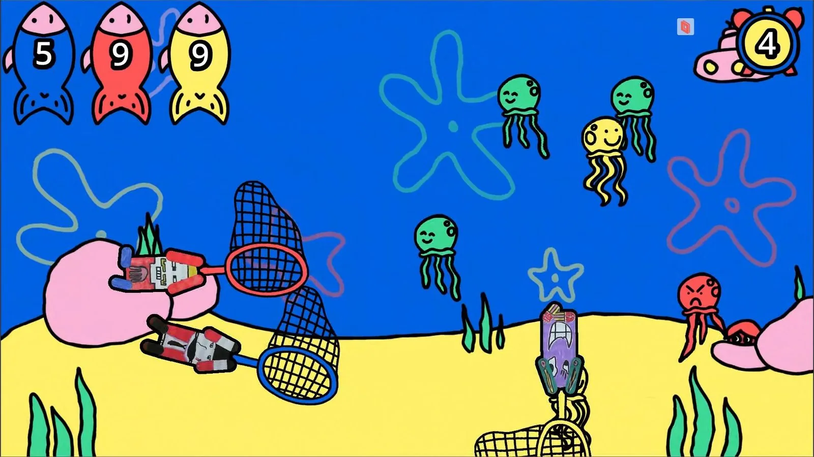
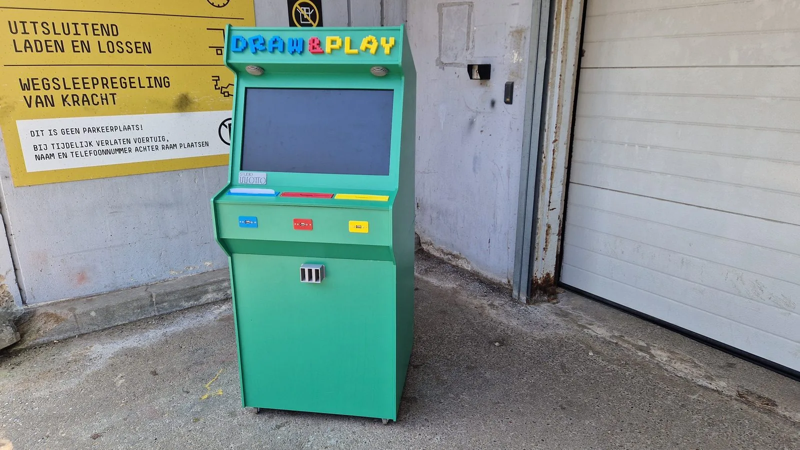
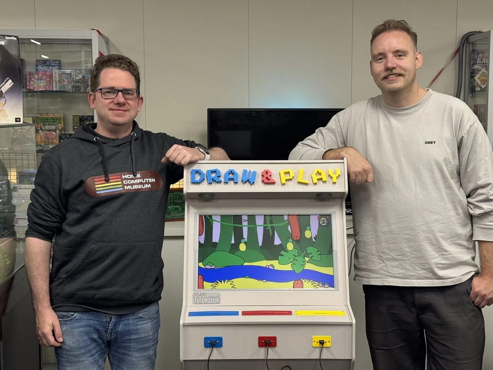
Projectinformatie
- Samenwerking
- Summa College Techniek
- Categorie
- Interactieve installaties
- Projecttype
- Interactieve arcade-kast, educatieve installatie
- Studio Wotto verzorgde
- Concept, ontwerp, hardware, software en bouw
- Gepresenteerd bij
- High Tech Ontdekkingsroute, Brainport-regio
- Toepassing
- Onderwijs, evenementen en festivals
- Beschikbaarheid
- Te huur op locatie
- Gerelateerde diensten
- Interactieve installaties, gamification, educatieve technologie